3. Omni 8.x Feature Setup
Introduction
Thank you for purchasing ESORS's Drupal theme - Omni. Omni Feature Setup guide will cover some key features of Omni theme.
If you are a Drupal beginner, we wrote a short tutorial to help you find your way around Drupal. If you already know Drupal, please complete Basic Setup first before start with this Feature Setup.
For support, you can contact us through themeforest.net. We will respond within 24hrs.
Table of Content
-
Menu
- Main navigation
- Main navigation mobile
- Secondary menu
- Other menus
-
Showcases
-
Custom Block
-
Views
- Article Block View
- Blog Block View
-
Contact Form
-
Menu
- Main navigation
- Main navigation mobile
- Secondary menu
- Other menus
- Showcases
- Custom Block
-
Views
- Article Block View
- Blog Block View
- Contact Form
Showcase
Omni Agency offer three Showcase styles with easy setup steps. By using two new Block types: Showcase and Showcase Element, user can quickly create Showcase just like to create any other blocks. There is also a Showcase block region for placing showcase block.
- Understand Showcase and Showcase Element block type
- Showcase: contain basic Showcase setting. It also contain multiple Showcase Element.
- Showcase Element: contain actual image, slide title, link, caption etc.
Each Showcase Element act like slide and Showcase act like container that glue slides together.
- Showcase block form
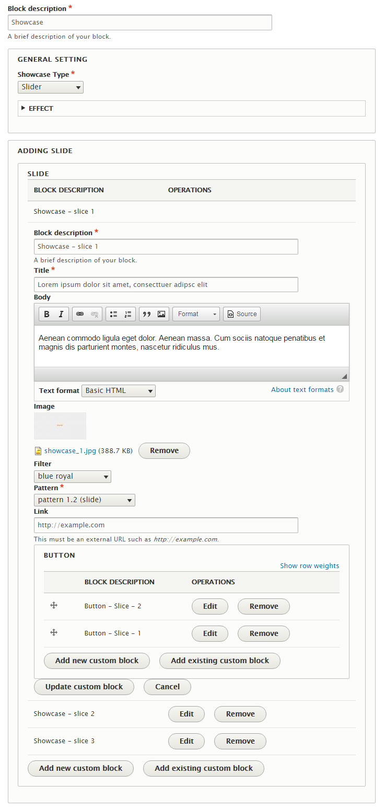
- Title
- General Setting
- Showcase Type: three type of Showcases. Gallery reveal showcase depend on Gallery showcase. See below for detail.
- Effect: auto play, fading and speed
- Adding Slide: adding at least three slides
- Block description
- Title
- Body
- Image: act as background.
- Filter: color on top of background image act as filter.
- Pattern: provide different style & layout options.
- URL: full url with http:// which point to destination node
- Button: link to anywhere with variety of button styles. Can have two buttons side by side.
- Specific Setting: only needed for Gallery showcase type. When checked, Gallery showcase expecting Gallery Reveal showcase setup accordingly with each Gallery showcase slices.
1. Slider
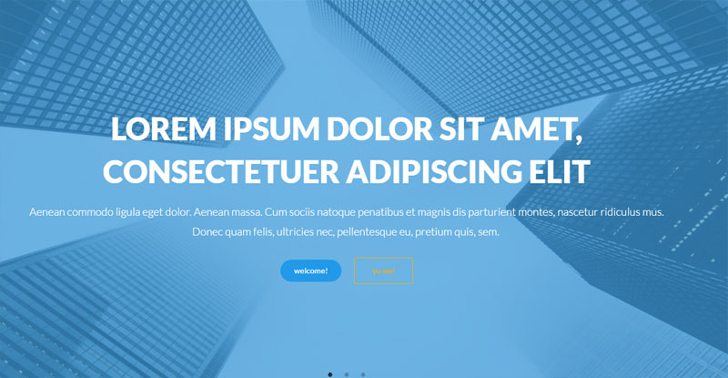
- Requirement:
- Complete General setting.
- Images size normally 1920px X 1000px as background.
- Optional:
- Link
- Button
- Skip:
- Specific setting
- Suitable regions: Showcase region only
2. Gallery
Gallery showcase can be set to with or without Gallery reveal.
With Gallery reveal: check with reveal at Specific Setting (default). With reveal, each image will have a link button that link to Gallery reveal slice which show more detail along with larger image.
Without Gallery reveal: uncheck with reveal at Specific Setting. Without reveal, Gallery will show as simple Gallery slider.
- Requirement:
- Complete General setting
- Complete Specific setting
- Same height and width images
- Optional:
- Link
- Section
- Skip:
- Body
- Filter
- Button
3. Gallery Reveal
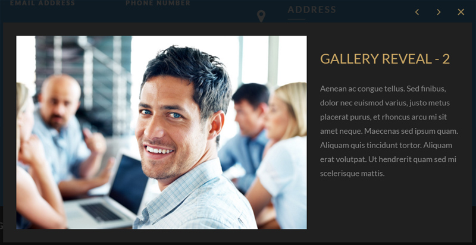
Similar to Gallery showcase with more detail and larger image. It require Gallery showcase and can't be showing alone.
- Requirement:
- Complete Gallery showcase first.
- Complete General setting.
- Need to be setup images order according to Gallery showcase.
- Need to be published below Gallery showcase at same region.
- Body field.
- Same height and width images.
- Optional:
- Button
- Skip:
- Link
- Filter
Custom Block
In Omni Agency there are two types of block:
- Custom Block type
- Non-Custom Block type (system block, menu block, basic block etc.)
Omni Agency using Custom Block's merging feature to merge up to six other Custom Blocks's content together to get flexible layouts and styles.
Custom Block use Attachment feature turn Non-Custom Block into Custom Block.
To use Attachment feature, Non-Custom Block must be published/placed first.
For example, User account menu is a Drupal 8 menus block which is a Non-Custom Block. If user want to merge User account menu block with other blocks. First it need to be published then attached to a Custom Block, last step to merge with others.
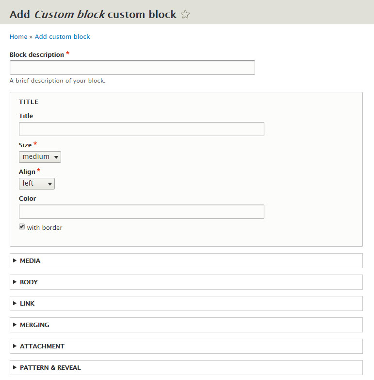
- Title
- Title
- Size: change title size.
- Align: change title align position.
- Color: change title color. Input color code without #.
- Border: adding bottom border for title.
- Media
- Image
- with padding: checked as default, very useful when creating blocks.
- Icon: using fontawesome icon set. Fill in icon code into Icon field only.
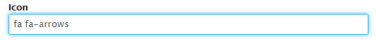
- Body
- Add body content
- Setting
- Text Color: change body text color. Input color code without #.
- with padding: checked as default, very useful when creating blocks.
- with bottom margin: unchecked as default.
- Background:
- Color: change body background color. Input color code without #.
- Image: adding background image.
- Filter: adding filter for background image.
- Link
It adds links or buttons to the block
- URL: require full url with http://. When filled in, custom block's title and image will become linkable.
- Button Align
- Adding Button element blocks
- Merging
The idea is to merge several blocks into one block by horizontal, vertical, tab, slider. Use it only when you want to merge blocks.
- Type: select a merging type
- Horizontal Specific Setting
- width: box width or full width
- same height: force all merging blocks into same height. Required each individual block checked with this options.
- collapse: by default each merging blocks will have space in-between. Checking this box will collapse the gap.
- Add one or more existing custom blocks to merge.Merging field can ONLY pick up Custom Block type created content, it can't pick up Non-Custom Block type's content.
- Attachment
The idea is to attach any blocks that have been published/placed into Block layout and turn it into Custom block so other Custom block can use it to merge.
- Pattern & Reveal
- Pattern allow user to change the block layout & styles
- pattern 1.0 (title/image/body)
- pattern 2.0 (title/body/image)
- pattern 3.0 (image/title/body)
- pattern 4.0 (image/body/title)
- pattern 5.0 (body/title/image)
- pattern 6.0 (body/image/title)
- pattern x.1: allow image show on the left
- pattern x.2: allow image show on the right
- pattern x.3: allow image show as it is, in the center
- Reveal: scroll & reveal feature. It allows blocks to appear on screen while scrolling.
- Enable
- Origin
- Speed
- Delay
- Distance
- Reset: replay when re-appear
Why Merging
Layout & style
To use Drupal 8 bartik theme as example, there are Featured bottom first, Featured bottom second, Featured bottom third, three Featured bottom regions. If we fill in all three Featured bottom regions then Featured bottom will always show as three columns layout. Unlike bartik, in Omni Agency there is one Main bottom region with Main bottom one, Main bottom two, Main bottom three and Main bottom four. If user only use Main bottom region with merging feature then Omni Agency can have one stack as three columns and put another merging stack below as four columns and so on. Each stack can have its' own background colors, background image, title, styles etc. Result Omni Agency can use much less block regions with more layout options and styles.
Why Attachment
Turn any block into Custom Block
Because Custom Block can only merging other Custom Block's content. For example, in order for a system menu block to be merged, it must be attach to a Custom block first. To attach any blocks, Drupal require block to be published first. User can use Usable region to hold these blocks. It will not show on site.
Use Case
Demo menu footer
- Create menu News & Events at Structure > Menus
- Publish it at Usable region
- Create a Custom block that use attachment field to attach News & Events menu block
- Create menu Service at Structure > Menus
- Publish it at Usable region
- Create a Custom block that use attachment field to attach Service menu block
- Create another Custom block and use vertical merging that merge News & Events, Service block together
- Do the same for Focus & Solution, Career & About the Agency, International
- Then horizontal merge all four Custom blocks into one.
- Publish it into a region
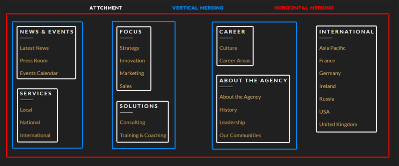
Contact form & info
- Publish Contact form into Usable region
- Create a Custom block that use attachment field to attach Contact form block
- Create a Custom block Phone & Email
- Create a Custom block Address
- Publish Social Media Links into Usable region
- Create a Custom block that use attachment field to attach Social Media Links block and call it Follow Us
- Create another Custom block and use vertical merging that merge Phone & Email, Address, Follow Us blocks together
- Then horizontal merge all blocks into one.
- Publish it into a region
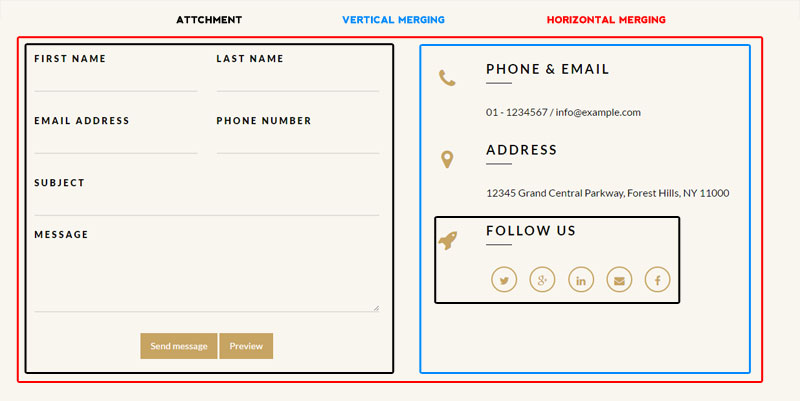
Special Case
Equal height merging
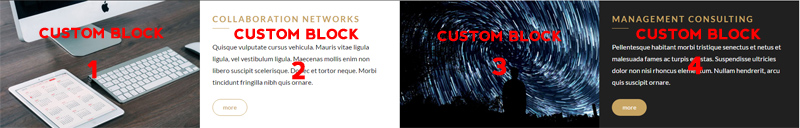
- Create four Custom blocks, block 1 & 3 with background image only, block 2 & 4 with content only. When creating these blocks be sure to check same height option for each one.
- Create another Custom block and use horizontal merging that merge block 1, 2, 3, 4 together and again be sure to check same height option for this block.
- Publish it into a region.
Tab Merging
- Create three Custom blocks.
- Since each tab has its' own tab title & icon, user need to attach these blocks into another Custom block that provide the title & icon.
- Remember before attach any block that block need to be published.
- Publish those three Custom blocks into Usable region.
- Create a Custom block that use attachment field to attach one of the Custom block that been published and fill in the icon code.
- Do the same for other two published Custom blocks.
- Then Tab merging all blocks into one. Tab merging can have background image or background color.
- Publish it into a region.
Views
There are two built-in views that come with Omni Agency.
- Omni custom block library
Omni custom block library provide an alternative view to Drupal 8 built-in Custom block library view. User can disable the Drupal original Custom block library view.
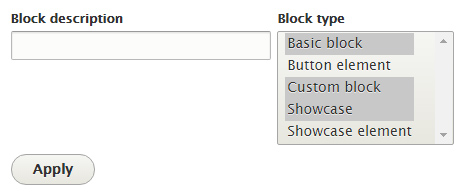Omni custom block library view allow user to select block type and only display the specific block type content.
- Omni library
Omni library contain 5 block displays:
- Page (article): display all article nodes, path as /article
- Page (blog): display all blog nodes, path as /blog
- Page (FAQ): display article nodes with tag as FAQ, path as /FAQ. To display articles with FAQ tag, first user need to adding FAQ tag when creating article:
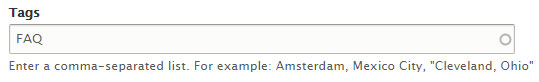
Then user need to modify Page (FAQ) display and adding Tags (field_tags) as FILTER CRITERIA and set it to FAQ
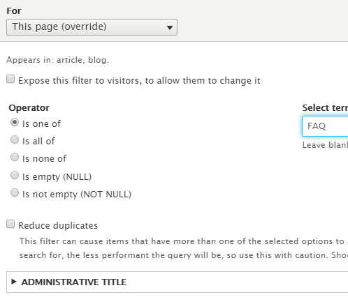
- Block (article): display a list of articles as block, can be placed at Block layout.
- Block (blog): display a list of blogs as block, can be placed at Block layout.
Contact Form
- Contact Form Page
User need to set default contact form first. Go to Home > Administration > Structure > Contact forms > Edit Custom contact form and check Make this the default form
It can be access at path /contact.
- Contact Form Block
Contact Form Block require Contact Block module installed & enabled. Go to Structure > Block Layout and click Place block button then search for Contact block and select Omni Custom contact form as Contact form option.
Copyright
The content of this document is copyrighted by ESORS.com. © 2008-2016 All rights reserved. No portion of the content may be directly or indirectly copied, published, reproduced, modified, performed, displayed, sold, transmitted, broadcast, rewritten for broadcast or publication or redistributed in any medium.